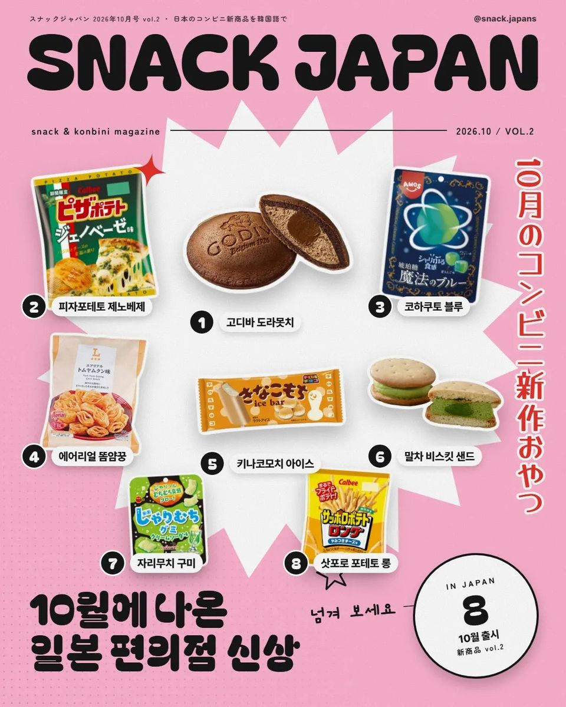
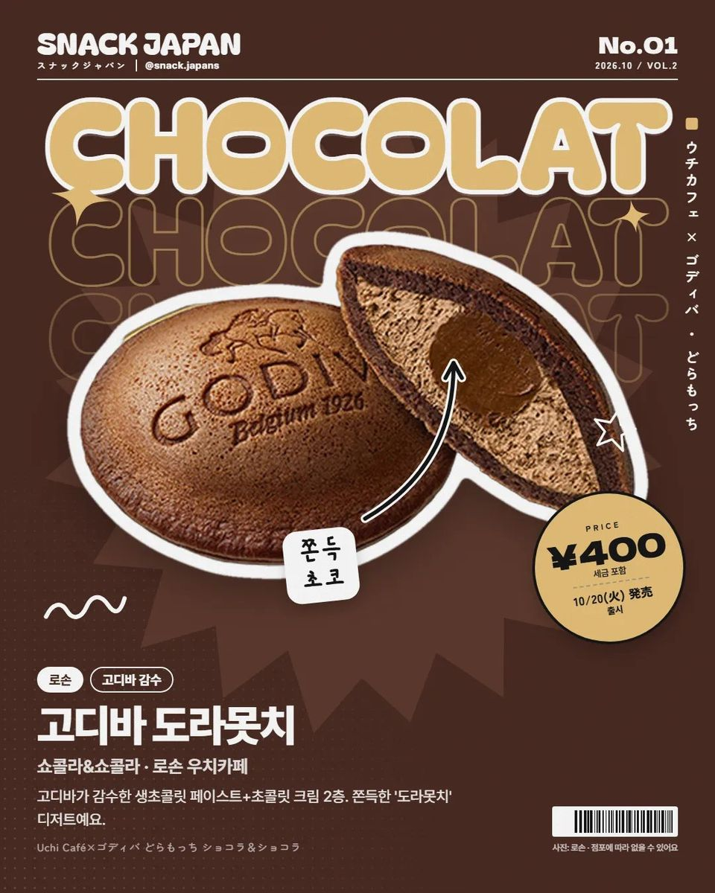
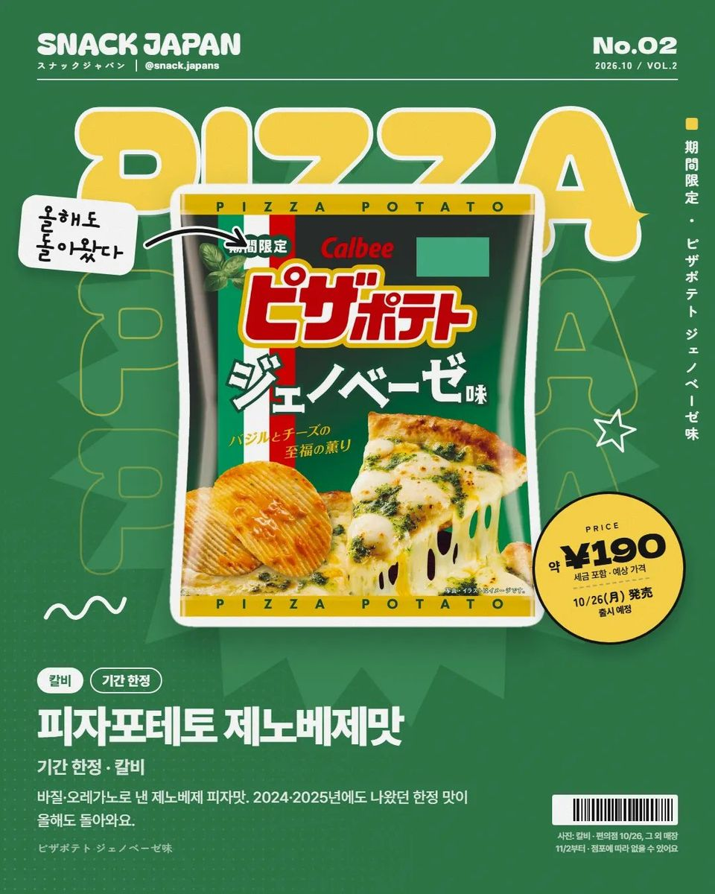
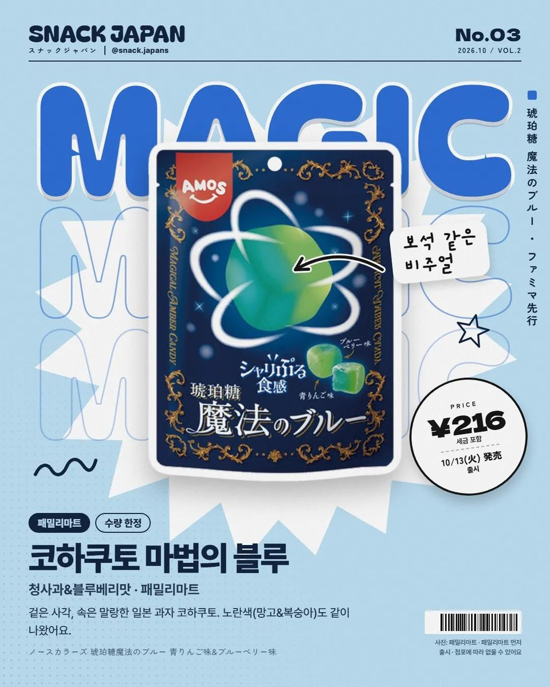
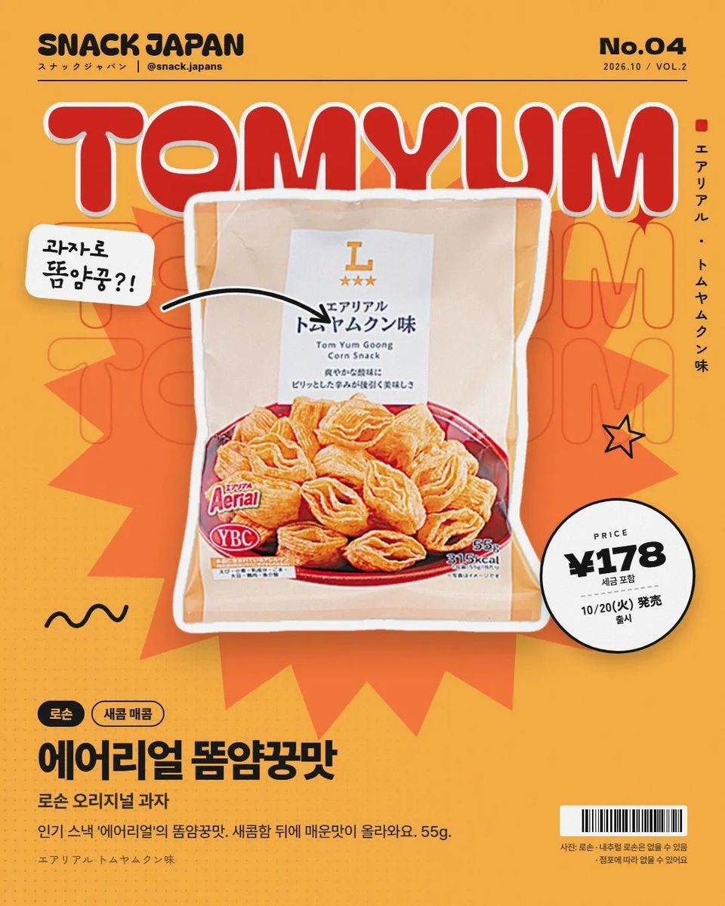
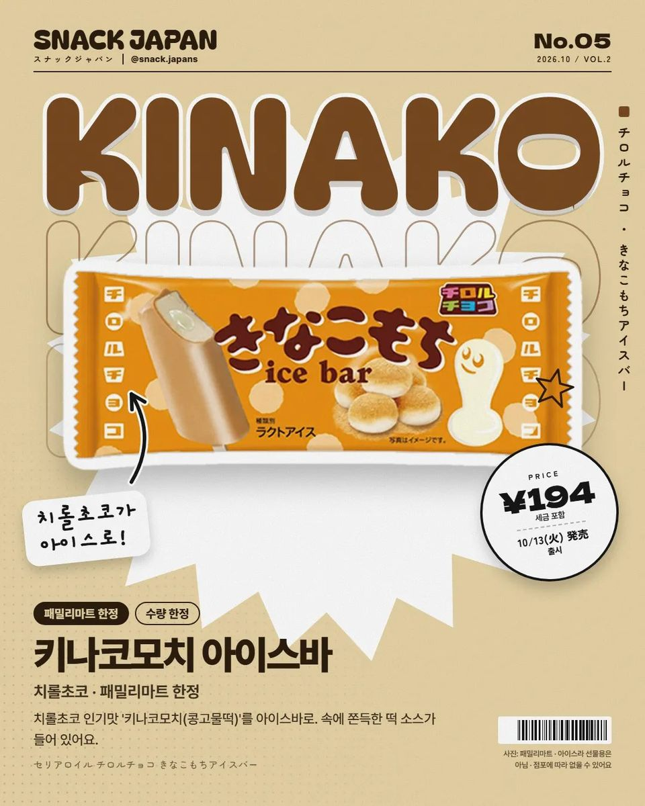
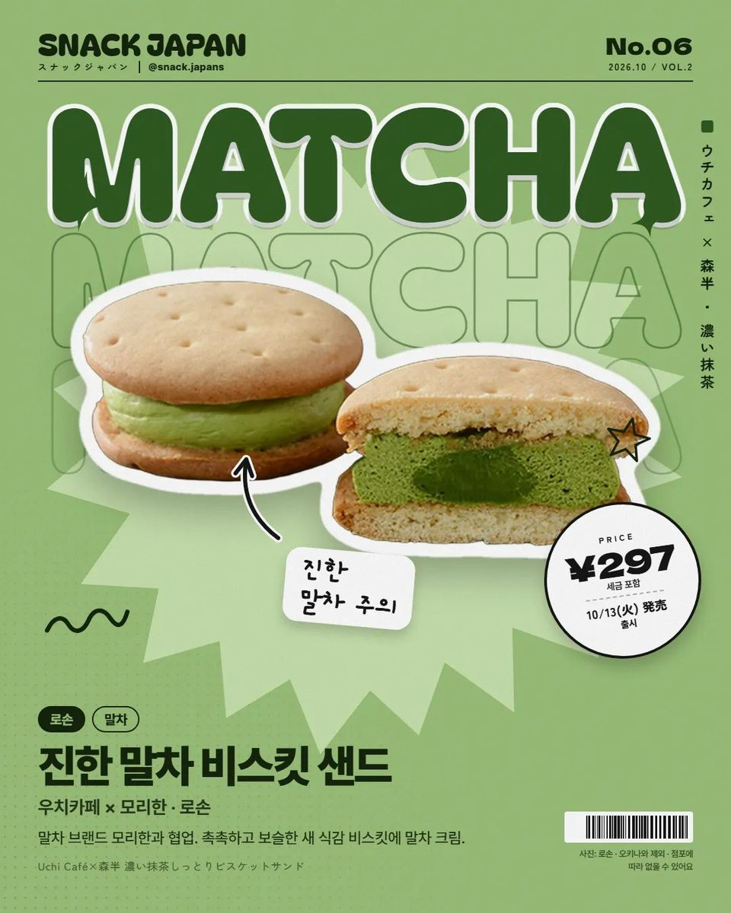
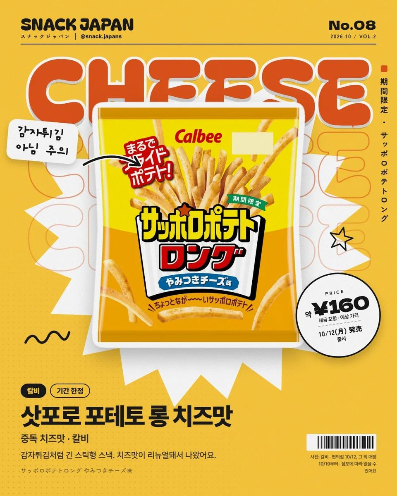

10월 일본 편의점 신상 과자 8가지, 로손 에어리얼 똠얌꿍맛부터 고디바 도라못치까지
인기 스낵 에어리얼 똠얌꿍맛에 고디바 도라못치, 피자포테토 제노베제맛까지 10월 신상 정리.
일본 로손에 '똠얌꿍맛 과자'가 나와요 🌶
10월에 나온 일본 편의점 신상 8가지,
표지 번호 순서대로 정리해 볼게요!


1. 고디바 도라못치 (로손)
- 출시: 10월 20일

2. 피자포테토 제노베제맛 (칼비)
- 출시: 편의점 10월 26일부터 (기간 한정)

3. 코하쿠토 마법의 블루 (패밀리마트)
- 출시: 10월 13일, 패밀리마트 먼저 (수량 한정)

4. 에어리얼 똠얌꿍맛 (로손)
인기 스낵 에어리얼의 똠얌꿍맛이에요.
새콤함 뒤에 매운맛이 올라오는 맛이래요.
- 출시: 10월 20일

5. 치롤초코 키나코모치 아이스바 (패밀리마트 한정)
- 출시: 10월 13일

6. 진한 말차 비스킷 샌드 (로손)
- 출시: 10월 13일
7. 자리무치 구미 크림소다맛 (패밀리마트 한정)
맨 위 표지 사진의 7번이에요!
- 출시: 10월 13일

8. 삿포로 포테토 롱 치즈맛 (칼비)
- 출시: 편의점 10월 12일부터 (기간 한정)
총평
- 기준: 10월 16일 공식 발표
- 참고: 지역·매장에 따라 없을 수 있어요
일본 편의점 가시면 신상 코너부터 확인해 보세요!